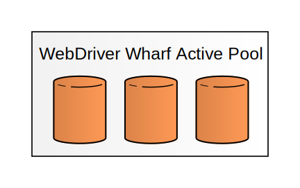
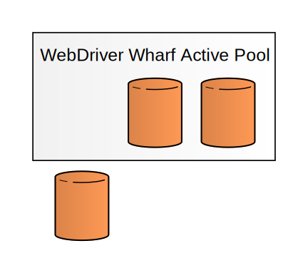
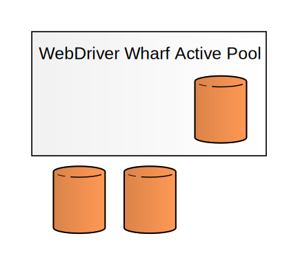
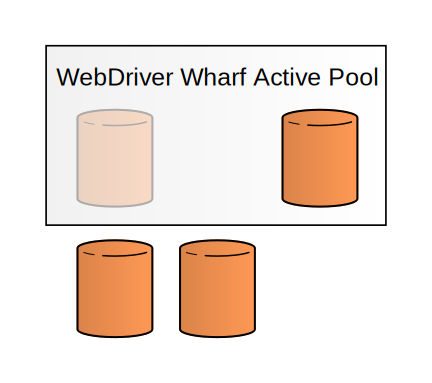
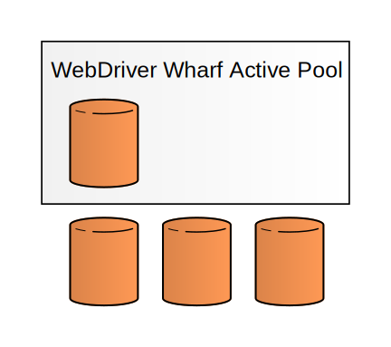
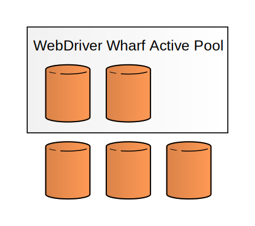
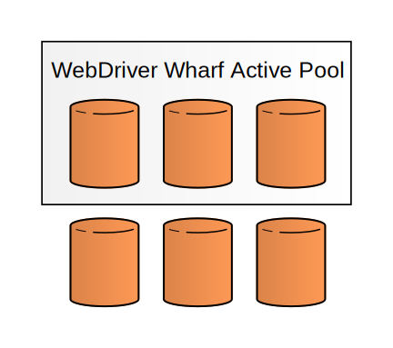

WebDriver Wharf
WebDriver Wharf provides selenium servers with compatible browsers in a docker container environment created for a single test run and browser instance.
One selenium server per test runner.
One browser per selenium server.
WebDriver Wharf
Built with Docker
WebDriver Wharf is powered by Docker, which makes it easy to create and maintain a base image running a selenium server and specific versions of firefox and chrome to match. Docker containers spawn quickly and are easy to destroy, making them ideal for running isolated ephemeral services.
WebDriver Wharf
Why?
Q: Selenium already provides facilities for running tests in multiple browsers, what problem(s) does Webdriver Wharf solve?
A:
Assuming your selenium grids works perfectly, webdriver wharf probably won't solve any problems. Unfortunately, my selenium grid
never rarely worked perfectly. Tests that worked fine on a single standalone server were mysteriously failing with cryptic selenium
errors when run on the grid, and each time those failures were investigated, they led back to obscure bugs in selenium, a browser's
webdriver implementation (even firefox, which is virtually the reference model), or some other dark crevice of Java that I don't have
the time to spelunk.
WebDriver Wharf
The idea
So, rather than relying on selenium to do the parallelization, I explored this question:
Instead of letting selenium parallelize my browsers, why not parallelize selenium itself?
My answer to that question is webdriver wharf. After switching to wharf, about the only selenium errors I see are directly related to my automation, e.g. stale elements, no such element found by a locator, etc.
That's pretty great.
WebDriver Wharf
The Library
Webdriver Wharf uses a basic library analogy. Wharf containers can be checked out, renewed, and checked back in.
One minor difference between wharf and a real library is that, after checkin, wharf containers are immediately destroyed, and can never be checked out again.
WebDriver Wharf
Active Pool
Wharf maintains an active pool of running containers, waiting to be checked out. While docker containers spawn quickly, selenium itself takes a little time to start up. Wharf ensures that selenium is listenening before allowing a container to be checked out.
It's fairly cheap, resource-wise, to run the selenium standalone server as long as no browsers are spawned, so this pool exists to make checkouts happen fast.
WebDriver Wharf
Checking Out
Checked out containers are removed from the active pool, and are considered to be in-use until they are checked back in.
Checked out containers cannot be checked out by another wharf user.
WebDriver Wharf
VNC
In addition to a selenium server, wharf containers run VNC, so you can watch the automation run if you want or need to.
Information in the checkout includes the selenium command executor, which is used by the local webdriver instance, as well as the VNC display.
WebDriver Wharf
Refilling the pool
When containers are checked out, WebDriver Wharf will start to refill the pool to handle future checkouts.
Serving checkouts is Wharf's highest priority; they will not be delayed as long as a container is available for checkout in the active pool.
WebDriver Wharf
Pool Exhaustion
In the event of an empty pool at checkout, it may take up to 20 seconds for a new container to spawn and the selenium server to start. This is handled by Wharf (the request will block), and aside from the delay it is invisible to users.
Note:This delay is the main reason for having the container pool in the first place, but it is admittedly an insignificant delay compared to how long a complete selenium automation run might take. But I want it now!
WebDriver Wharf
Renewals
Wharf containers have a relatively short lifetime (1 hour by default). After that, they are destroyed unless they are renewed. Renewals, just like checkouts and checkins, are done by sending a request to a simple HTTP endpoint.
This helps ensure that unused containers don't hang around too long, and you don't really need to worry about checking containers in (but please do check them in).
WebDriver Wharf
Checking In
On checkin, containers are simply destroyed. Docker makes cleanup easy.
You did check you containers in, right?
No? Well...
WebDriver Wharf
Some notes
A few helpful things to know:
- One of wharf's greatest limitation is that it can only run browsers that its base image (fedora) can run. This means you give up testing with IE and Safari if wharf is your only source of browsers.
- One of wharf's great features is that it is nothing more than a selenium server. The key information it gives you on checkout is the webdriver command_executor. Once you hand that off to your webdriver instance, Nothing Is Weird™.
- WebDriver Wharf will periodically pull the latest image from the docker forge and update the active pool to use that image, so wharf stays up to date with the configured docker image.
- The image that wharf uses is, of course, configurable. The only thing wharf requires of the containers it spawns is that they listen on ports 4444 for selenium and 5900 for VNC.
WebDriver Wharf
What about sauce?
Q: Doesn't sauce labs already kinda do this?
A: Yep!
But, of course, even if your project is open source and even if you qualify for Open Sauce, sauce only gives you 3 simultaneous executors. That's simply not enough.
However, sauce labs is an excellent compliment to webdriver wharf, since it can help cover the gaps in coverage left by being unable to run IE or Safari in fedora.
WebDriver Wharf
Things to improve
Wharf is working well in its current role on my team (CloudForms QE), but there are a few things that it needs to be generally useful:
- Load balancing
- The interface
- Generalization
In my experience, one processor can run two Firefoxen simultaneously without much trouble. Putting a load balancer in front of several wharves is probably a simple task, given wharf's simple interface.
The interface, while simple, is pretty bad. Right now, all interactions take place in everyone's favorite web request: Non-idempotent unauthenticated GETs. In a happy world, we'd probably have authn, authz, and a real REST interface.
While webdriver-wharf will always be focused on selenium webdriver, there's no reason that the guts of it can't be generalized into a framework for creating libraries of other docker containers.
finis
Webdriver Wharf
/